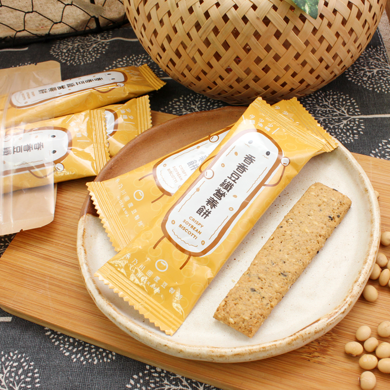
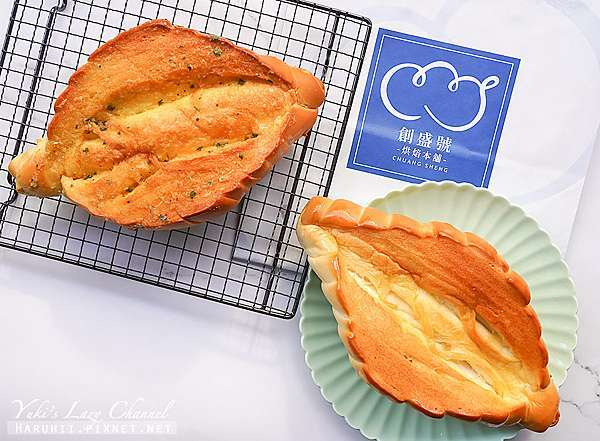

張景崴
生日:92/06/17
興趣:閱讀、看動漫
中原大學資管系
座右銘:
最危險的事莫過於把鬧鐘關掉後又閉上了眼睛，
這是目前人類唯一可實行的穿越方法--
閉眼五秒鐘就能抵達兩小時後的未來。


不要讓明天的你，看不起今天的你自己
程式技能
css專業技能
打桌球人生經歷
管理學-木匠的家
這是我第一次參加這種公益活動，在高中的服務學習我也都是在圖書館中完成，除了歸書就是整理書跟找書，枯燥乏味，而且沒有讓我感到對社會有甚麼貢獻，僅僅是在完成任務罷了。而這次不一樣，我們拆的牛仔褲，是作為公益活動的販賣品，而且還有可能在無印良品中出現。在這次的活動中，我不僅學到了裁減牛仔褲的新知識，還對社會做出了貢獻，雖然只是微不足道的一點，但積沙成塔，每一次都這樣做一點的話，最終將會變成巨大的力量。這樣一想，在我得到成就感的同時，還有賣出商品的錢將會被用來幫助別人的滿足感，這才是我在這次活動中最大的收穫。
企業概論-販賣豆纖餅
我原以為大學生活跟高中不同只在於科目方面，但這堂課的內容卻令我打破了這個幻想， 同學組成小組，與廠商談價格、跟老師貸款、然後還要自己賣東西，根本就是一間小公司， 我們的組員分工明確、通力合作，但最後販賣的銷量卻不如人意， 雖然結局並沒有很好，但這也讓我從中學到了很多， 俗話說，失敗為成功之母，相信總結了這次的經驗以後，下次的我會做得更好。
打工經歷-做麵包
在升大二的暑假，我去應徵了我第一份打工，是負責在麵包店的後場揉麵團， 在打工前，我從沒想過會這麼累，每天到上班地點就是一直揉麵團， 手非常酸，而且我的前輩似乎並不喜歡我，中間還不能休息，每天下班後回家都直接倒在床上， 這次的經歷讓我對打工抑或者說工作有了非常不良好的印象， 這次經驗也讓我知道了錢很難賺，這個血淋淋的事實， 因此，我決定比以前加倍努力，爭取未來能當個自由工作者，不必受到公司的束縛。